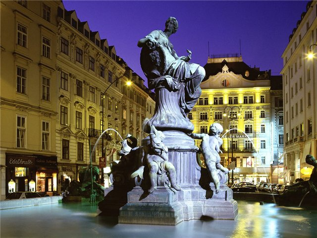

Страны
-
Австрия
- Баден
- Берванг
- Вена
- Гайнберг
- Зальцбугр
- Зёльден
- Кирхберг
- Линц
- Майрхофен
- Нойштифт
- Обертауэрн
- Санкт Мартинс
- Фибербрун
- Холфгартен
- Циллерталь
- Штирия
-
Германия
- Бавария
- Берлин
- Гамбург
- Гессен
- Дрезден
- Кёльн
- Киль
- Мюнхен
- Нюрнберг
- Саар
- Саксония
- Тюрингия
- Франкфурт-на-Майне
- Шлезвиг-Гольштейн
- Брно
- Карловы Вары
- Кутна-Гора
- Либерец
- Марианские Лазне
- Моравия
- Пардубице
- Прага
- Теплице
- Фримбург
- Чешский Крумлов
- Бретань
- Валь Торанс
- Гренобль
- Канны
- Лион
- Марсель
- Монако
- Ницца
- о.Корсика
- Париж
- Сен-Жерве
-
Испания
- Авила
- Алава
- Аликанте
- Альбасете
- Альмерия
- Астурия
- Бадахос
- Барселона
- Бургос
- Валенсия
- Гранада
- Ирун
- Канарские острова
- Коста Бланка
- Коста Брава
- Мадрид
- Майорка
- о.Ибица
- Севилья
Чехия
Франция
Австрия

Австрия — небольшая альпийская страна в центре Европы, которая удивляет своими живописными ландшафтами и разнообразием растительного и животного мира.
Туры в Австрию привлекают туристов со всего света разнообразными возможностями: активный зимний отдых в Австрии, знакомство с уникальными архитектурными памятниками Австрии, непревзойденные музыкальные традиции и богатство культурной жизни Австрии.
Гостеприимство и дружелюбие австрийцев стало заметной чертой национального характера.